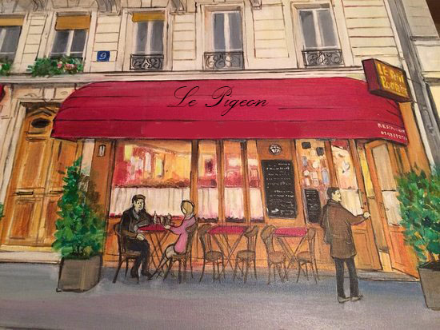

"The Pigeon" A Choose Your Own Adventure Story

Story: It’s a warm sunny day in the city of Paris, at the restaurant, "Le Pigeon". Who will you be?
Peter the Pigeon: Peter is a performing pigeon who performs for a restaurant, and is trained by the trainer, but the chef seems to have some form of hatred against him.
The trainer- The trainer helps Peter get better at his performance, and teaches him new tricks. The trainer works for the restaurant, but his dream is to one day start a circus.
The Chef - The chef is a crooked man, who typically would have very sinister intentions against the trainer and Peter, however, with your guidance, he might have a complete change of heart.